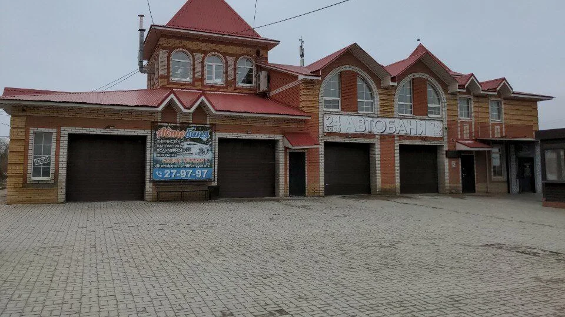
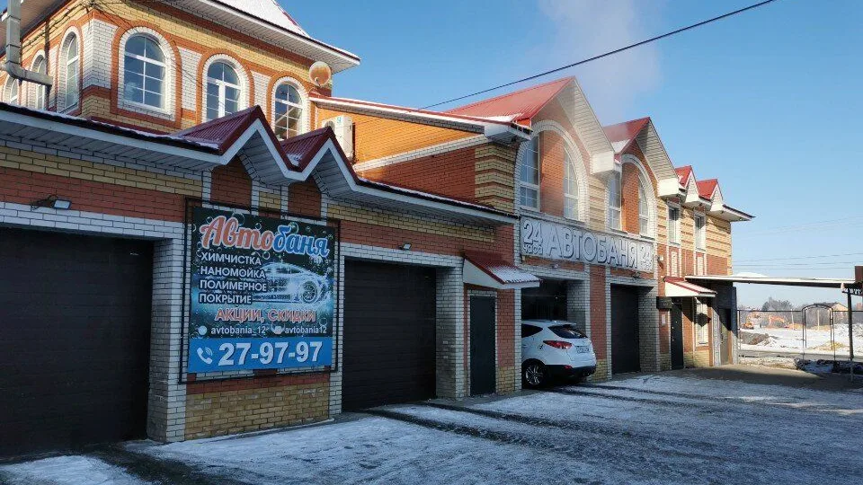
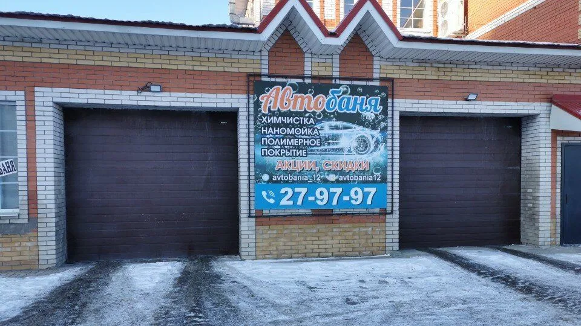
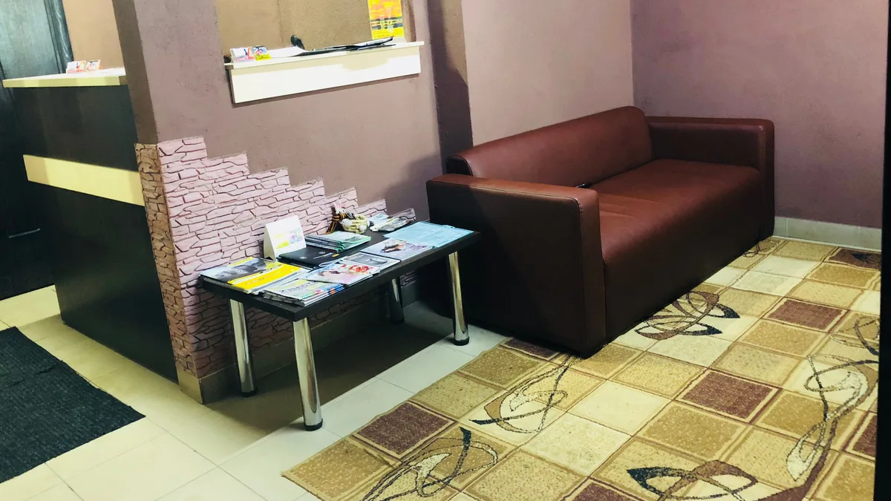

Автомойка и детейлинг · Красноармейская слобода, 56А
Автомойка и химчистка салона в Йошкар-Оле
Автобаня: 5 моечных зон, мойка кузова, двигателя, днища и колёс, химчистка салона, нанесение защитного воска. Оплата картой, запись по телефону.
- 4,4 на Яндекс Картах, 304 оценки, 94 отзыва
- Мойка кузова от 150 ₽
- 5 моечных зон, оплата картой

Услуги Автобани в Йошкар-Оле
Что входит в услуги
- Виды мойки: автоматическая, бесконтактная, ручная, комплексная
- Мойка двигателя, днища и колёс
- Химчистка салона
- Наномойка и полимерное покрытие кузова
- Нанесение защитного воска и чернение резины
- Пять моечных зон, комната ожидания
Запись, адрес и оплата
- Запись по телефону, по утрам очередей обычно нет
- Адрес: Красноармейская слобода, 56А
- Оплата картой
Цены на мойку и химчистку в Йошкар-Оле
На карточке указана одна цена: мойка кузова от 150 ₽. Остальное называют по телефону, оно зависит от автомобиля.
Мойка
- Мойка кузоваот 150 ₽
- Бесконтактная и комплексная мойкауточнить
- Мойка двигателяуточнить
- Мойка днища и колёсуточнить
Салон и защита
- Химчистка салонауточнить
- Нанесение защитного воскауточнить
- Наномойка и полимерное покрытиеуточнить
- Чернение резиныуточнить
Цена мойки кузова - с карточки в Яндекс Картах. Остальные цены называют по телефону +7 (8362) 27-97-97.
Как записаться в Автобаню в Йошкар-Оле
- 01
Выбрали услугу и время
Укажите услугу, день и час в форме на сайте - в окне будет текст для разговора.
- 02
Позвонили
Телефон +7 (8362) 27-97-97. Назовите услугу, время и марку автомобиля.
- 03
Подтвердили время
Администратор подтверждает запись по телефону. Утром очередей обычно нет, но можно и по записи.
- 04
Заехали на мойку
Красноармейская слобода, 56А. Пока ждёте, есть комната ожидания.
Фото Автобаня в Йошкар-Оле



Почему возвращаются в Автобаню
Быстро и качественно
«Уже не первый год обслуживаю авто у них. Быстро, качественно» - Сергей Чесноков, 16 апреля.
Вежливый персонал
«Персонал вежливый, сотрудники ответственные и добросовестные» - Наталья Колесникова, 31 мая 2023.
Утром нет очередей
«Утром не бывает очередей, удобно. Но можно и по записи» - A_ K-1968, 16 декабря 2024.
Моют с совестью
«Моют хорошо с совестью, менеджер вежливый» - Андрей Головащенко, 25 марта 2024.
Отзывы о Автобаня в Йошкар-Оле
«Отличная мойка. Сотрудники знают своё дело. Уже не первый год обслуживаю авто у них. Быстро, качественно. В общем рекомендую.»
Сергей Чесноков · 16 апреля
«Часто пользуюсь услугами этой мойки, всегда быстро и качественно! Рядом кафе где можно перекусить пока ждёшь машину! Персонал вежливый, сотрудники ответственные и добросовестные!»
Наталья Колесникова · 31 мая 2023
«Отличная мойка. Качественно и быстро. Утром не бывает очередей, удобно. Но можно и по записи»
A_ K-1968 · 16 декабря 2024
Отзывы с карточки на Яндекс.Картах, без правок.
Частые вопросы о детейлинге в Йошкар-Оле
Сколько стоит мойка в Йошкар-Оле?
По карточке Автобани мойка кузова от 150 ₽. Стоимость остальных видов мойки называют по телефону +7 (8362) 27-97-97.
Какие виды мойки есть?
Автоматическая, бесконтактная, ручная, комплексная, а также мойка двигателя, днища и колёс.
Делаете ли химчистку салона?
Да, химчистка салона указана среди услуг Автобани. Стоимость называют по телефону.
Есть ли наномойка и защитные покрытия?
На баннере у входа указаны наномойка и полимерное покрытие, в особенностях карточки есть нанесение защитного воска.
Можно ли приехать без записи?
Да, но по отзывам утром очередей обычно нет, а в загруженное время лучше записаться по телефону.
Где находится Автобаня и до скольки работает?
Йошкар-Ола, Красноармейская слобода, 56А. На карточке указано время ежедневно 07:30-20:30, уточните по телефону.
Сколько моечных зон?
Пять моечных зон, это указано на карточке.
Можно ли оплатить картой?
Да, на карточке указана оплата картой.
Запишитесь в Автобаню на удобное время
- Адрес
- Красноармейская слобода, 56А, Йошкар-Ола
- Часы
- ежедневно 07:30-20:30
- Телефон
- +7 (8362) 27-97-97